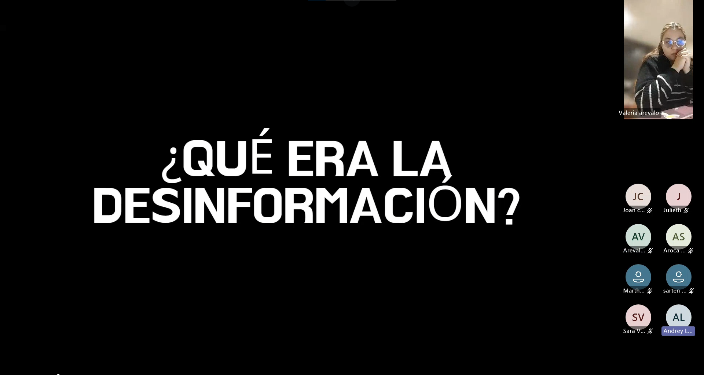
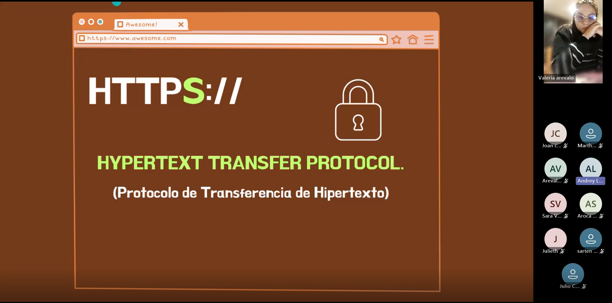
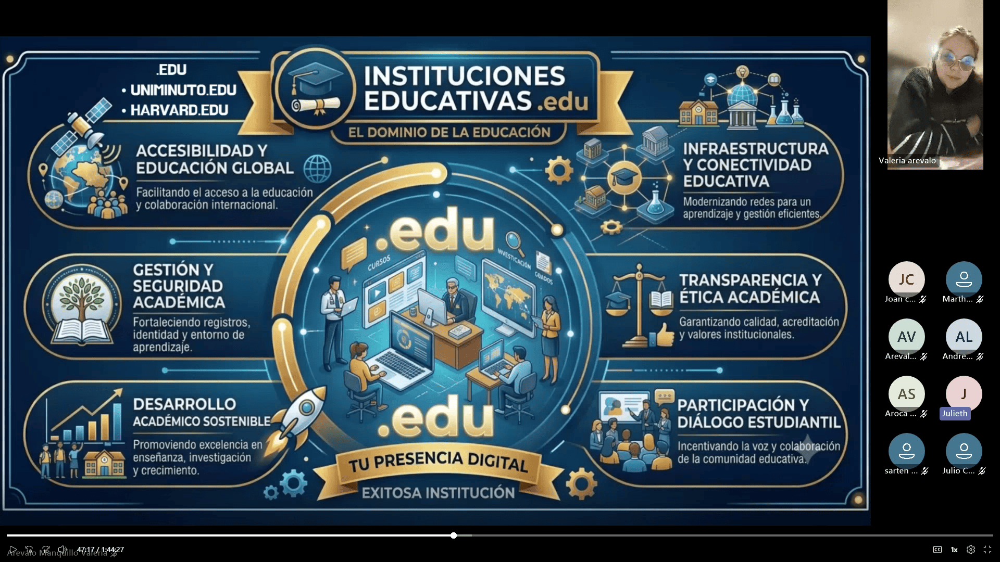
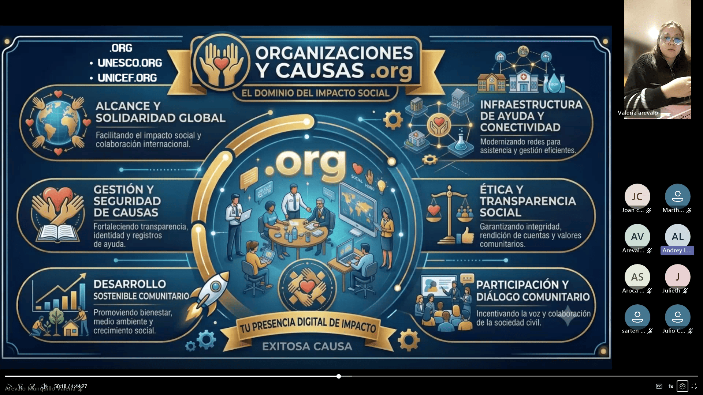
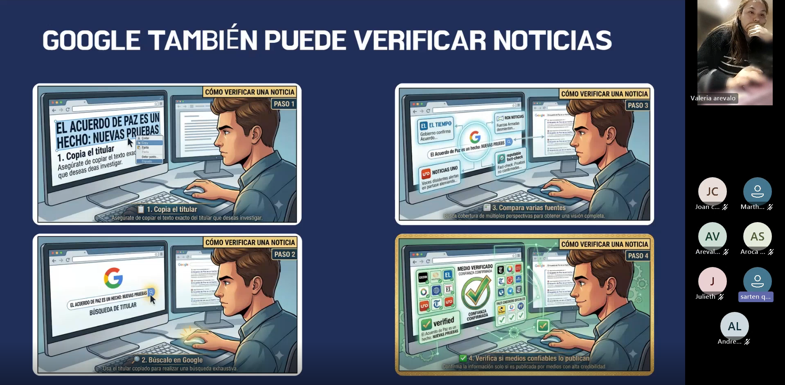
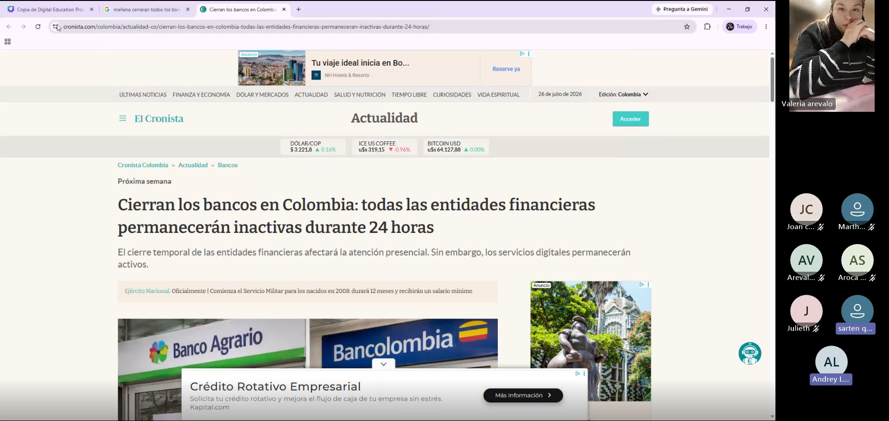
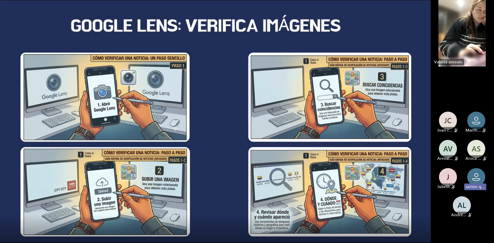

Contexto de la reunión
La segunda reunión del proyecto Fiscalía Digital tuvo como propósito profundizar en las herramientas y estrategias necesarias para verificar información en Internet. A partir de los conocimientos adquiridos en la sesión anterior, los participantes analizaron páginas web, protocolos de seguridad, dominios institucionales y métodos de búsqueda que permiten identificar si una información proviene de una fuente confiable.
La sesión fue desarrollada mediante Microsoft Teams y se documentó a través de la grabación oficial y la transcripción de la reunión. Los momentos seleccionados corresponden a los segmentos con mayor participación e interacción entre los asistentes, evidenciando procesos de comprensión, análisis y aplicación práctica del aprendizaje.
Ficha técnica
- Reunión: 2
- Tema principal: Verificación de información y páginas web
- Modalidad: Virtual sincrónica
- Plataforma: Microsoft Teams
- Facilitadora: Valeria Arévalo Manquillo
- Duración aproximada: 1 hora y 25 minutos
Objetivos desarrollados
Recuperación del aprendizaje
Recordar los conceptos trabajados durante la Reunión 1 y fortalecer la continuidad del proceso formativo.
Seguridad en páginas web
Comprender el significado de HTTPS, las URLs y los diferentes dominios utilizados en Internet.
Verificación digital
Aplicar herramientas como Google y Google Lens para analizar noticias, imágenes y fuentes de información.
Evidencias de la reunión
A continuación se presentan los momentos con mayor participación identificados durante la Reunión 2. Cada evidencia documenta la interacción de los participantes, la aplicación de conceptos previamente aprendidos y el fortalecimiento de competencias relacionadas con la verificación de información y el análisis crítico de fuentes digitales.
Evidencia 1 · Recordando lo aprendido en la Reunión 1
Minuto de referencia
05:24 – 10:01

Antes de iniciar el nuevo contenido, la facilitadora invitó a los participantes a recordar los temas abordados durante la primera capacitación. Esta estrategia permitió activar los conocimientos previos y evaluar el nivel de retención del aprendizaje alcanzado en la sesión anterior.
Alison Arevalo recordó conceptos como Fiscalía Digital, estafas en redes sociales, suplantación de identidad y vida digital, mientras que Martha complementó la conversación mencionando el tema de seguridad digital. Posteriormente, Sarten reconstruyó el compromiso adquirido durante la reunión anterior: verificar, comparar y denunciar información falsa antes de compartirla.
Este momento evidenció que los participantes no solo recordaban conceptos, sino que también eran capaces de relacionarlos con comportamientos responsables en los entornos digitales.
Evidencia 2 · ¿Para qué sirve HTTPS?
Minuto de referencia
26:17 – 28:21

Durante este segmento de la reunión, la facilitadora explicó el significado del protocolo HTTPS y su importancia para la seguridad de las páginas web. A partir de una pregunta orientadora, los participantes construyeron el concepto relacionándolo con la protección de datos personales y la autenticidad de los sitios web.
Alison Arevalo explicó que HTTPS debe verificarse antes de compartir información personal, especialmente cuando se ingresan datos sensibles. Por su parte, Andrey complementó la respuesta indicando que incluso una página clonada puede utilizar HTTPS, por lo que también es necesario revisar cuidadosamente la URL y confirmar que el sitio corresponda a la página oficial.
La discusión permitió comprender que HTTPS representa una medida importante de seguridad, pero que por sí solo no garantiza que una página sea completamente confiable.
Evidencia 3 · Identificación de dominios .edu y experiencias con universidades
Minuto de referencia
46:59 – 49:36

En esta actividad la facilitadora presentó el significado del dominio .edu como identificador de instituciones educativas y solicitó a los participantes leer, interpretar y relacionar este dominio con ejemplos reales.
Julieth realizó la lectura del contenido y explicó qué comprendía sobre el uso del dominio educativo. Posteriormente, Alison Arevalo y Andrey mencionaron diferentes universidades que conocían y las relacionaron con direcciones web terminadas en .edu, estableciendo conexiones entre el contenido teórico y experiencias personales.
La actividad permitió fortalecer la capacidad para reconocer sitios educativos confiables y comprender que los dominios ofrecen información importante sobre la naturaleza de una página web.
Evidencia 4 · Análisis del dominio .org y su utilidad
Minuto de referencia
50:17 – 51:22

Durante este momento de la sesión se presentó el dominio .org y se invitó a los participantes a interpretar su significado dentro del ecosistema de Internet.
Andrey realizó la lectura del contenido y posteriormente explicó que este dominio suele estar asociado con organizaciones, fundaciones, proyectos sociales y entidades sin fines de lucro. Su intervención fue utilizada por la facilitadora para ampliar el concepto y relacionarlo con organizaciones que desarrollan actividades de interés público y colaboración comunitaria.
Aunque la participación se concentró principalmente en Andrey, la actividad permitió consolidar el reconocimiento de los diferentes tipos de dominios y su utilidad para evaluar la naturaleza de un sitio web.
Evidencia 5 · Uso de Google para verificar información
Minuto de referencia
1:16:41 – 1:19:21

Este fue uno de los momentos más representativos de la reunión. Alison Arevalo preguntó cómo debía utilizarse Google para verificar una noticia y explicó que normalmente compara diferentes resultados y fuentes antes de confiar en una información.
La facilitadora realizó un ejercicio en vivo utilizando una noticia falsa sobre el supuesto cierre de los bancos en Colombia, mientras Alison Arevalo y Andrey participaron identificando que Facebook no constituye una fuente oficial y que, ante una decisión gubernamental, sería necesario consultar entidades oficiales o medios de comunicación confiables.
La actividad permitió comprender que Google debe utilizarse como una herramienta para contrastar información y buscar múltiples fuentes, no como una garantía automática de veracidad.
Evidencia 6 · Análisis de una página y una noticia sobre el cierre de bancos
Minuto de referencia
1:19:57 – 1:22:05

En este segmento la facilitadora presentó una página web con una noticia relacionada con el supuesto cierre de bancos en Colombia y pidió a los participantes analizar si la información era confiable.
Alison Arevalo y Andrey examinaron la URL, la presencia de HTTPS, los dominios .com y .gov, y discutieron si la información realmente provenía de una entidad gubernamental. Ambos concluyeron que no basta con que una página tenga HTTPS: también es necesario verificar que el dominio corresponda a una institución oficial y que el contenido responda de manera coherente a la información buscada.
Este momento representó una evidencia clara de aplicación práctica de los conceptos aprendidos durante la sesión, ya que los participantes utilizaron criterios de análisis para tomar una decisión fundamentada sobre la confiabilidad de una página web.
Evidencia 7 · Experiencia personal utilizando Google Lens
Minuto de referencia
1:24:26 – 1:24:59

En el cierre de la reunión, Alison Arevalo compartió una experiencia personal utilizando Google Lens. Explicó que había empleado la cámara del teléfono para revisar ejercicios académicos y también para identificar una serpiente encontrada cerca de su casa, utilizando la herramienta para determinar si era venenosa.
La facilitadora retomó este ejemplo para explicar que herramientas similares pueden utilizarse para verificar fotografías, identificar imágenes manipuladas y analizar contenidos visuales antes de compartirlos en Internet.
Esta intervención constituyó una evidencia concreta de apropiación tecnológica y transferencia del aprendizaje hacia situaciones reales de la vida cotidiana.
Resultados observados durante la reunión
La segunda reunión permitió evidenciar un avance significativo respecto a la primera sesión. Los participantes demostraron retención de conceptos previamente aprendidos, capacidad para interpretar URLs, protocolos HTTPS y dominios web, y habilidades iniciales para verificar noticias utilizando Google, fuentes oficiales y herramientas como Google Lens.
El momento de mayor impacto pedagógico fue el análisis de la noticia falsa sobre el cierre de bancos, donde los asistentes aplicaron de manera integrada los conocimientos adquiridos durante la capacitación, evaluando la autenticidad de una página web y argumentando por qué una información no debía compartirse sin verificación previa.
Resultado principal
La reunión fortaleció las competencias relacionadas con pensamiento crítico, verificación digital, protección de datos personales y análisis de fuentes de información, consolidando el perfil del participante como Investigador Digital dentro del proyecto Fiscalía Digital.
Continúa explorando el repositorio
Has finalizado la documentación correspondiente a la Reunión 2. Puedes regresar al repositorio principal de sesiones o continuar con la Reunión 3, donde se desarrollan las actividades relacionadas con inteligencia artificial, identidad digital, deepfakes, phishing y protección de datos personales.